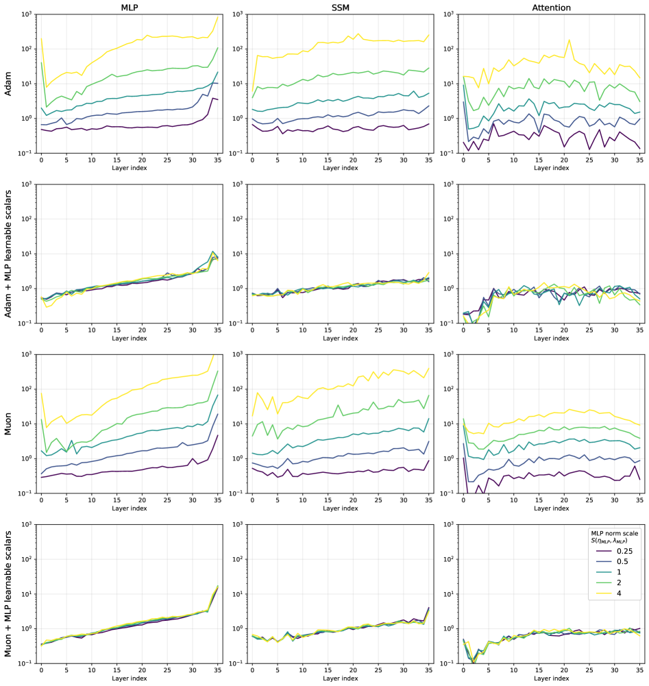
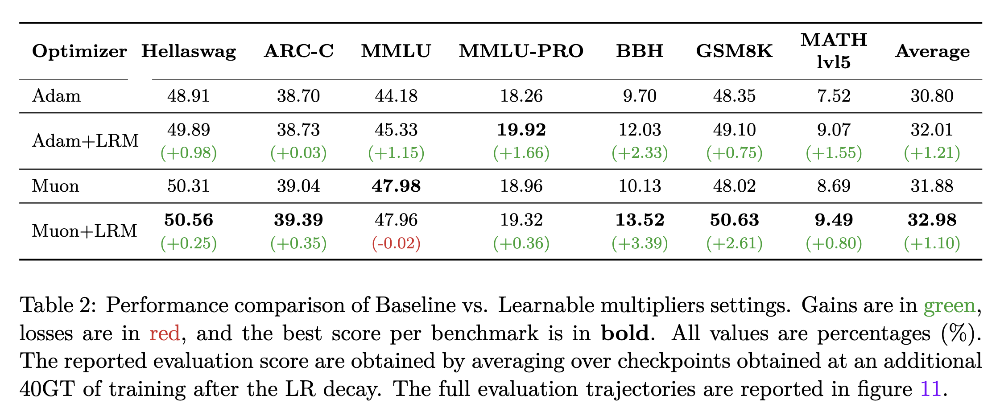

Summary
Weight decay, combined with stochastic gradient noise, drives matrix weight norms to an equilibrium set entirely by optimizer hyperparameters — not by the data. The fix: attach a small learnable scalar or row/column vector to each matrix. These learnable multipliers escape the same noise–decay dynamics and freely adapt scale to the task, while the underlying matrix stays regularized. At inference time multipliers merge into the weights, leaving zero overhead.
Validated on a 200GT run with Falcon-H1-0.5B, the method yields +1.2% average improvement over well-tuned Adam and Muon baselines, with outsized gains on reasoning: BBH +2.3–3.4%, GSM8K +2.6% (Muon). It is integrated into Falcon-H1-Tiny and underpins the customized μP in Falcon-H1.
Key Contributions
The Problem
The Noise–Weight Decay Equilibrium
Gradient noise causes weights to expand in a Brownian-motion-like drift; weight decay shrinks them back. The resulting equilibrium norm scales as ‖W‖ ∝ √(η/λ) — set entirely by the learning rate η and decay coefficient λ, not by the data. Every matrix layer is locked to a scale dictated by the optimizer, regardless of what the model is learning.
Non-matrix parameters (RMSNorm weights, scalar gates) typically carry no weight decay and face no such constraint, which is why they can settle at very different norms without instability. Under standard μP this equilibrium also breaks width scaling: activation norms grow as √d while relative gradient updates shrink as 1/√d, undermining feature learning at scale. Learnable multipliers resolve both problems.
The Solution
Scalar and Row–Column Learnable Multipliers
The scalar form attaches a trainable scalar s to each matrix: W̅ = s · W. W stays in equilibrium under weight decay; s carries no decay and adapts freely. Its gradient accumulates over the full matrix, averaging out per-element noise and making it far more stable than any individual weight. The row–column form W̅𝍌 = rᵢ · Wᵢᵣ · cᵣ goes further, letting each row and column settle independently — a learnable, data-adaptive generalization of μP's fixed proxy-model multipliers.
Two training details matter: multiplier gradients should be excluded from global gradient-norm clipping (they are large early in training and would otherwise trigger excessive clipping); and a light weight decay (λlrm = 2×10−3) stabilizes multiplicative and normalization symmetries. At inference, multipliers merge into the weights — zero memory or latency overhead.
Results
Consistent Gains Across Optimizers, Concentrated in Reasoning
Falcon-H1-0.5B trained for 200GT (≈20× Chinchilla-optimal). Learnable multipliers improve over well-tuned baselines by +1.21% avg (Adam) and +1.10% avg (Muon). Near-identical gains across both optimizers confirm the source is the noise–WD constraint, not optimizer-specific interactions.
Reasoning benchmarks gain most: BBH +2.33% (Adam) / +3.39% (Muon); GSM8K +2.61% (Muon). Knowledge tasks show smaller but consistent improvement (MMLU +1.15%). Ablations show multipliers improve any baseline, including fully hand-tuned μP configurations — positioning them as μP's learnable next step rather than an alternative.
Highlights
- +1.21% avg (Adam) / +1.10% avg (Muon) over well-tuned baselines; BBH +2.33–3.39%, GSM8K +2.61%.
- Zero inference overhead — multipliers merge into weights before deployment.
- Works with any optimizer; gains are optimizer-agnostic, confirming the noise–WD mechanism.
- Learnable generalization of μP: proxy-model tuning replaced by in-run scale learning, with at most ~2% training throughput cost.
- Integrated into Falcon-H1-Tiny and the customized μP of Falcon-H1.
